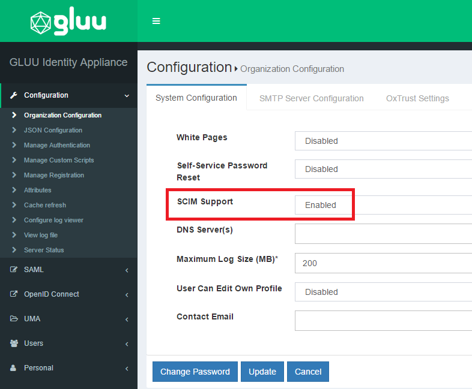
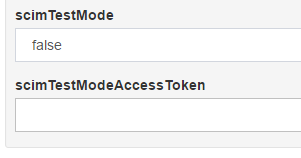
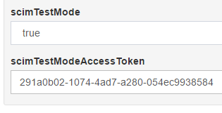
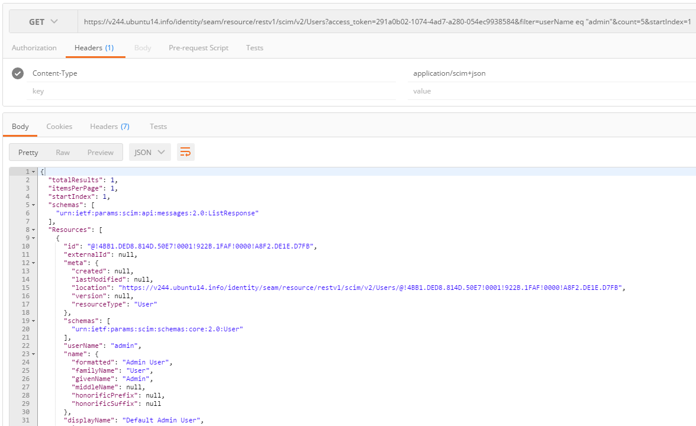
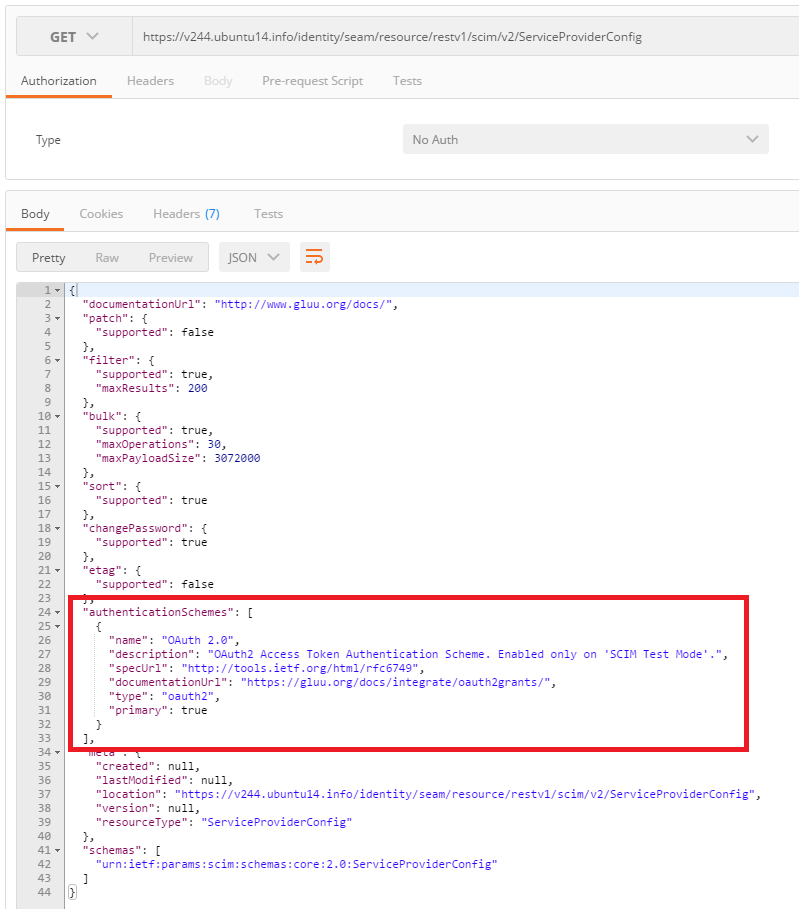
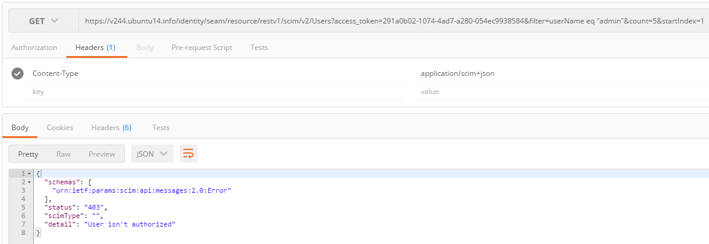

Overview#
Gluu Server supports only UMA protection for SCIM endpoints from version 2.4.0 onwards. A machine based authorization method is used to obtain the access tokens. SCIM/UMA is built into the Gluu Server CE and does not require any special package or installation. Please checkout Installation Guide for installation instructions.
Installation#
- Install Gluu Server CE following the Installation Guide and
remember to install
Asimbawhile running the setup script. The setup script prepares the configuration necessary for SCIM UMA RS endpoints and SCIM UMA RP client and this template is used.
Note: The JWKS for RS and RP clients are put into the ./output/scim.ldif file ready for SCIM configuration.
The setup.properties.file contains the RS and RP JWKS in Base64 format.
-
Use the following command to extract OpenID SCIM RS and RP Client ID
cat setup.properties.last | grep "scim_rs_client_id\|scim_rp_client_id" -
The UMA SCIM client requires JWKS, so the setup script extracts the JWKS from
setup.properties.lastand puts it into the./output/scim-rp.jksfile.
NOTE: For versions before v2.4.4, the JWKS is put in the ./output/scim-rp-openid-keys.json file instead.
Configuration#
- Enable SCIM from Organization Configuration

- oxTrust SCIM UMA configuration is automatically updated while running the
setup.pyand the correct values are setup in the oxtrust-config.json file.
"umaIssuer":"https://%(hostname)s",
"umaClientId":"%(scim_rs_client_id)s",
"umaClientKeyId":"",
"umaResourceId":"1447184268430",
"umaScope":"https://%(hostname)s/oxauth/seam/resource/restv1/uma/scopes/scim_access",
"umaClientKeyStoreFile":"%(scim_rs_client_jks_fn)s",
"umaClientKeyStorePassword":"%(scim_rs_client_jks_pass_encoded)s",
umaClientKeyIdcan be updated with thealiasfromscim-rp.jksfile; if it is not updated, the first key from the file is used automatically.
Testing SCIM UMA#
The following is a sample code that can be run to test the configured SCIM UMA Gluu CE. It uses SCIM-Client, a Java library also developed by Gluu intended for client applications.
- If you are using Maven, below is how to add SCIM-Client to your project:
<repositories>
<repository>
<id>gluu</id>
<name>Gluu repository</name>
<url>http://ox.gluu.org/maven</url>
</repository>
</repositories>
...
<dependency>
<groupId>gluu.scim.client</groupId>
<artifactId>SCIM-Client</artifactId>
<version>${scim.client.version}</version>
</dependency>
-
Starting with Release v2.4.2, an SCIM-Client must be used on a matching Gluu CE. For example, if you are running CE v2.4.4, you must also use SCIM-Client v2.4.4.
-
Add your domain's SSL certificate to the JRE's
cacertscertificate key store where your client application will run. There are lots of articles around the Web on how to do this. -
Supply the UMA parameters and run the code. NOTE: If you have re-installed Gluu CE, please note that the UMA parameters / JWKS files are also regenerated. You must then rebuild your client code with
targetortmpfolders possibly cleared beforehand to avoid conflicts.
package gluu.scim.client.dev.local;
import gluu.scim.client.ScimClient;
import gluu.scim.client.ScimResponse;
import gluu.scim2.client.Scim2Client;
import java.io.IOException;
import javax.ws.rs.core.MediaType;
import javax.xml.bind.JAXBException;
import org.codehaus.jackson.JsonGenerationException;
import org.codehaus.jackson.map.JsonMappingException;
public class TestScimClient {
private static void testScim1Uma(String domain, String umaMetaDataUrl, String umaAatClientId, String umaAatClientJksPath, String umaAatClientJksPassword, String umaAatClientKeyId) throws IOException, JsonGenerationException, JsonMappingException, JAXBException {
final ScimClient scimClient = ScimClient.umaInstance(domain, umaMetaDataUrl, umaAatClientId, umaAatClientJksPath, umaAatClientJksPassword, umaAatClientKeyId);
ScimResponse response = scimClient.personSearch("uid", "admin", MediaType.APPLICATION_JSON);
System.out.println("SCIM1 " + response.getResponseBodyString());
}
private static void testScim2Uma(String domain, String umaMetaDataUrl, String umaAatClientId, String umaAatClientJksPath, String umaAatClientJksPassword, String umaAatClientKeyId) throws IOException, JsonGenerationException, JsonMappingException, JAXBException {
final Scim2Client scim2Client = Scim2Client.umaInstance(domain, umaMetaDataUrl, umaAatClientId, umaAatClientJksPath, umaAatClientJksPassword, umaAatClientKeyId);
String filter = "userName eq \"admin\"";
ScimResponse response = scim2Client.searchUsers(filter, 1, 1, "", "", null);
System.out.println("SCIM2: " + response.getResponseBodyString());
}
public static void main(String[] args) throws IOException, JAXBException {
final String domain = "https://c67.gluu.info/identity/seam/resource/restv1";
final String umaMetaDataUrl = "https://c67.gluu.info/.well-known/uma-configuration";
final String umaAatClientId = "@!A410.188A.95DD.EA5A!0001!3A1E.BAA5!0008!5870.A795";
final String umaAatClientJksPath = "D:\\Development\\test_data\\scim\\scim-rp.jks";
final String umaAatClientJksPassword = "secret";
final String umaAatClientKeyId = "";
testScim1Uma(domain, umaMetaDataUrl, umaAatClientId, umaAatClientJksPath, umaAatClientJksPassword, umaAatClientKeyId);
testScim2Uma(domain, umaMetaDataUrl, umaAatClientId, umaAatClientJksPath, umaAatClientJksPassword, umaAatClientKeyId);
}
}
SCIM 2.0 Test Mode (v2.4.4+)#
Starting with CE v2.4.4, the "test mode" configuration will help developers test the SCIM 2.0 endpoints easier. Instead of UMA + SCIM-Client, in test mode a long-lived OAuth2 access token issued by the Gluu server is used to authorize with the SCIM 2.0 endpoints.
To enable test mode, do the following:
- Login to the oxTrust GUI and go to "Configuration" -> "JSON Configuration" -> "OxTrust Configuration", then locate the property
scimTestMode.

- Set it to
true, then click the "Save Configuration" button. The Gluu server will then create a long-lived OAuth2 access token with a validity period of one year. Doing this will also switch the authentication scheme from UMA to OAuth2 Access Token. - Click again "JSON Configuration" -> "OxTrust Configuration" in the left navigation pane. This will retrieve the access token and be displayed in the
scimTestModeAccessTokenproperty.

- If the access token has expired, just repeat the previous steps to create a new one.
The access token can then be used as the query string parameter access_token in accessing the SCIM 2.0 endpoints, for example:

You can verify the current authentication scheme of the SCIM 2.0 endpoints by browsing its ServiceProviderConfig:

To exit test mode, just set scimTestMode back to false then click the "Save Configuration" button. This will switch the authentication scheme from OAuth2 Access Token to UMA. If you try using your access token again, you will now get the 403 Unauthorized error:

Notes#
UMA is protected with SCIM in Gluu Server Community Edition (CE). The usage of UMA requires HTTP GET and HTTP POST requests. Before testing, the Client making the requests must be added/registered in Gluu CE. The UMA configuration is available @ https://hostname/.well-known/uma-configuration. The request to authorization endpoint must accompanied with application/json content type.
The example below shows the parameters used in a real-life use case where the UMA RPT Token is authorized in oxAuth.
public RptAuthorizationResponse requestRptPermissionAuthorization(@HeaderParam("Authorization") String authorization,
@HeaderParam("Host") String amHost, RptAuthorizationRequest rptAuthorizationRequest);
If the default openID SCIM Client is not used, the inum must be added to the UMA Authorization Policy Custom Script.